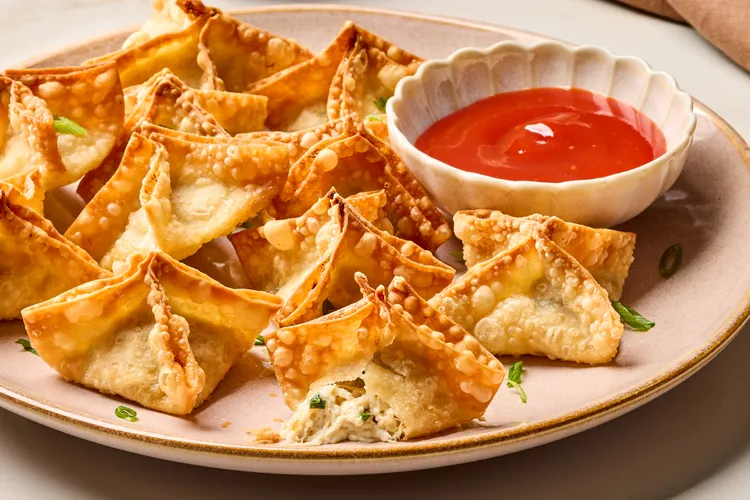

crab rangoon recipe

Description
This is a short, mouth-watering crab rangoon.
these crispy crab and cream cheese wontons are one of the most addictive,
delicious, and crowd-pleasing appetizers ever created.
That is, if the filling has enough crab in it.
I’m using a 1 to 1 ratio of crab to cream cheese.
Ingredients
- 8 ounces cream cheese
- 8 ounces crab meat, drained well
- ⅓ cup chopped green onions
- 1 clove crushed garlic
- 1 teaspoon soy sauce
- ½ teaspoon Worcestershire sauce
- ½ teaspoon salt, or to taste
- ½ teaspoon freshly ground black pepper
- ¼ teaspoon sesame oil
- 1 pinch cayenne pepper
- 60 (3.5 inch square) wonton wrappers
- Canola oil for frying
Steps
- Mix cream cheese, crab meat, green onions, garlic, soy sauce, fish sauce, Worcestershire sauce, salt, pepper, sesame oil, and cayenne pepper together with a fork until ingredients are blended thoroughly. Cover with plastic wrap and refrigerate until chilled, 1 or 2 hours.
- Keep wonton wrappers moist by covering with a damp paper towel. Place a small bowl of water nearby on the work surface. With a wet fingertip, moisten surface of wonton. Place 1 1/2 teaspoons of crab filling in center of wonton. Fold 2 opposite corners toward each other over the filling but without touching tips together yet. Fold up the other 2 corners. Working gently from the bottom, squeeze out any air bubbles; pinch together the 4 seams from the bottom up to create a modified pyramid (or "warhead") shape. Place on a dry surface. Continue with remaining wontons.
Heat
- Heat oil in deep fryer to 350 degrees F. Fry wontons in batches until golden brown and crispy, gently moving them around in the oil with a strainer to brown each surface, about 3 minutes. Let cool about a minute before eating. Serve with the dipping sauce.
- Whisk ketchup, rice vinegar, brown sugar, and sriracha sauce together in a bowl for the dipping sauce.
Home